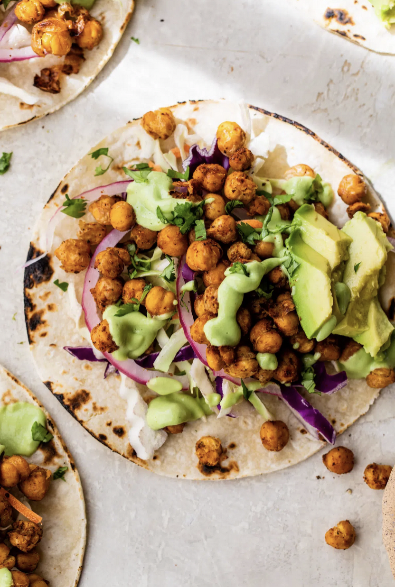

Chickpea Tacos

Crispy roasted chickpeas make an easy vegan taco filling!
Chickpea tacos are full of protein and fiber, and you can make them with taco seasoning packets, or your own spice blend. This is a favorite for parties - put out lots of toppings and let folks choose their own. You can soak and cook dried chickpeas, too, if you aren't as lazy as I am!
Ingredients:
- 1 can chickpeas, rinsed
- Taco seasoning
- Hard taco shells or soft taco tortillas
- Toppings of your choice:
- Avocado
- Shredded lettuce
- Diced tomato
- Sauteed peppers and onions
- Sour cream
- Salsa
- Cilantro
- Lime juice coleslaw
- ... on and on and on!
Steps:
- Season the chickpeas. Dry the rinsed chickpeas well with paper towels before transferring them to a bowl. Sprinkle taco seasoning over top and stir to coat.
- Roast the chickpeas. Spread the seasoned chickpeas in an even layer on a baking sheet. Roast in the oven until golden brown and crispy, stirring halfway.
- Prep the taco toppings. Meanwhile, prep the rest of your vegan taco fillings: pickle the red onion, chop the cilantro, and make the spicy avocado dressing. Warm the tortillas in the oven, microwave, or on the stove.
- Assemble. To assemble, pile the crispy roasted chickpeas and taco toppings into the warm tortillas. Enjoy!
Recipe and image from: The Almond Eater